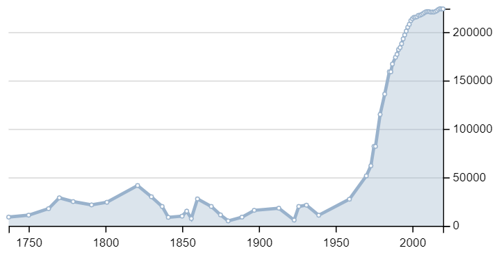
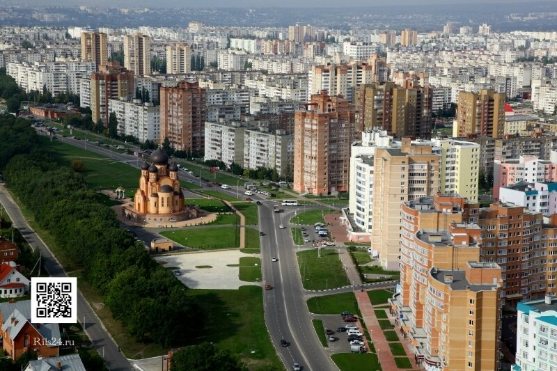

География
Расположен на берегу реки Оскол, её притоков Осколец, Убля, Котёл, Атаманский ручей, в 153 км к северо-востоку от Белгорода, близ границы с Курской областью. Соседствует с городом Губкин. Второй по численности город области.
Климат
Климат Старого Оскола — умеренно континентальный, со снежной, но относительно тёплой зимой и умеренно жарким летом.
История
Домонгольская Русь
Летописные источники ничего не сообщают об Осколе, но позднейшие источники Золотой Орды и Великого княжества Литовского и Русского дают однозначный ответ о существовании некого Тимура Мартынова на берегах одноименной реки и уничтоженного во время Батыева нашествия 1237-1240гг.
Орда и Великое княжество Литовское и Русское
Первое упоминание об Осколе содержится в литовском "Списке городов Свидригайло" от 1432 года. Оскол упоминается в этом списке на 64 месте сразу после Воронежа и Ельца. Также в этом списке упоминаются соседние Курск, Рыльск, Путивль и Милолюбль. Литовские источники дают понять, что Оскол возродился после монголо-татарского разорения во время княжения Витовта (1392-1430) как центр Оскольской волости Путивльского повета Киевской земли в составе Великого княжества Литовского. Ордынские источники, примерно в это же время, упоминают и Оскол и летописный Хотмыжск в ханских ярлыках в ряду таких русских городов, как Киев, Чернигов, Путивль, Курск. Вероятнее всего, Оскол был снова разрушен в 1501 или 1502 годах, во время набегов войск крымского хана и находился почти век в запустении.
Русское царство
В 1571 году согласно указу Ивана IV Грозного в месте впадения реки Убли в реку Оскол был заложен Усть-Ублинский острожек (ныне — село Анпиловка) для охраны южных рубежей Руси от набегов татар. Он просуществовал 15 лет и был впоследствии упразднён, но вплоть до 1593 года служилых людей отправляли нести дозор на этот рубеж.
В 1584 году летопись «Пискарёвского летописца» указывает такую информацию: «Того же году великий государь и великий князь Фёдор Иванович всея Руси… приказывает боярину своему и слуге и конюшему Борису Фёдоровичу Годунову да дьяку ближнему своему Андрею Щелканову городы ставить на поле и Сивере, и к Астрахани, которые за много лет запустеша от безбожных агорян и от междуусобныя брани: Елецких князей вотчина Ливны, Койса, Оскол, Валуйка, Белгария, Самара, Кромы, Монастырёв и иныя многия польския и северския»
Царь Федор Иоаннович дает приказ Годунову и Щелканову о становлении городов на землях славянских племен полян и северян. При этой в летописи также упоминается елецкое княжество, уничтоженное монголо-татарами (агорянами) и в чью вотчину входили города нынешнего Черноземья в том числе и Оскол. Данная информация согласовывается с более ранними литовскими и ордынскими источниками.
В 1593 году город под именем Оскол основан как застава на южных рубежах Русского царства. Город назван по имени реки, на берегах которой расположен. Основную часть населения составляли военные и крестьяне. В 1599 году основана слобода Казацкая.
Никоновская летопись за 1593 год сообщает: «…Повеление Государя царя и Великого князя Федора Иоанновича всея Руси поставиша на степи от Крымских татар городы Белгород, Оскол, Валуйку и иные городы, а до тех городов поставиша на Украине городы Воронеж, Ливны, Курск, Кромы, и насели ратными людьми».
В годы Смуты Оскол активно застраивается, так как находится в стороне от основных событий. Возникают пригородные слободы Ямская, Гумны, Стрелецкая, Пушкарская, Ездоцкая, Троицкая, Соковая, Воротниково.
В 1617 году город сожжён поляками и восстановлен воеводой М. Скуратовым, разгромившим поляков под Болховом. В 1625, 1642 и 1677 годы к городу подходили крымские татары, но взять его не смогли.
В 1655 году город переименован в Старый Оскол в связи с переименованием города Царёв Алексеев в Новый Оскол. С XVII века Старый Оскол известен как уездный центр Старооскольского уезда.
Население
На 1 января 2019 года по численности населения город находился на 93-м месте из 1115[45] городов Российской Федерации.
Административно-территориальное деление города
Согласно Уставу Старооскольского городского округа, в его состав входит целостное административное образование «Город Старый Оскол» со статусом городской территории, непосредственно подчинённой Администрации городского округа, без образования специального Управления территории.
В состав городской территории «Город Старый Оскол» входят административно-территориальные образования без статуса юридического лица, исторически сложившиеся, и не влекущие, согласно Уставу округа, создание органов муниципальной власти специально для данных территорий:
- Северо-Восточный район включает в себя:
- жилые микрорайоны Нового города: Жукова, Олимпийский, Макаренко, Солнечный, Космос, Конева, Ольминского, Королёва, Восточный, Степной, Дубрава (кварталы I, II и III), Надежда, Зелёный Лог, Лесной, Будённого, Юбилейный, Северный, Рождественский, Центральный, Уютный, Майский, Новый, 7-14 микрорайон.
- районы ИЖС: Северный, Дубрава, Лесная Поляна, Марышкин Лог, Научный центр (кварталы I, II и III), Сосенки, Радужный, ПромАгро, Пушкарская дача, Пролески, Вишенки.
- садовые некоммерческие товарищества: Сад пенсионеров имени И. Мичурина, Кукушкин хутор, Маришкин сад.
- кварталы: Автовокзала, Ублинские Горы.
- район частного сектора: Каменьки.
- гаражные общества: Автомобиль, Заря, Автолюбитель, Металлург-2,-3,-4, Уют-1,-2, Северный-2, Сталь.
- Северная промзона, включающая в себя: КХПС, Белтекс, Осколрыба, Комбикормовый завод, комплекс Славянки и прочие предприятия.
- Юго-Западный район включает в себя:
- жилые микрорайоны Микро: Горняк, Интернациональный, Парковый, Лебединец, Рудничный, Студенческий, Весенний, Молодогвардеец, Приборостроитель, Звёздный, Юность, Набережный, Южный.
- район ИЖС: Ямской.
- садовые некоммерческие товарищества: Водник, Коммунальщик-2, Казацкий лог, Отдых, Фиалка.
- кварталы: Свердлова, Комсомольский.
- слобода: Ямская, Соковая.
- район частного сектора: Стойло.
- гаражные общества: Ямская, Казацкий лог, Автолюбитель-5, Свердлова, Горняк, Соковое.
- Юго-западный промрайон, включающий в себя территории ОЗММ, СГОК, Осколцемента и прочих предприятий узла.
- Центральный район включает в себя:
- жилые кварталы исторического центра города: с I по XXXII квартал, включая Старую мельницу и Рыльскую слободу.
- слободы: Гумны, Казацкая, Холостая, Стрелецкая, Ламская, Пушкарская, Ездоцкая, Троицкая.
- район частного сектора: Углы, Горняшка, Канатная фабрика, Низовка, Киселёвка.
- жилые микрорайоны: Углы, Заречье.
- районы ИЖС: Раздолье, Казацкий, Хмелёва, Лётный, Ольховая Роща.
- гаражные общества: Горняшка.
- садовые некоммерческие товарищества: Горняшка, Осколец.
- промзоны: Казацкой слободы, Канатной фабрики, Мебельной фабрики, прирельсовой площадки СОМЗ.
- Железнодорожный район включает в себя:
- районы частного сектора: Уют, Победа, Посёлок, Барак-Треугольника.
- Железнодорожный узел станции: Старый Оскол.
- Котельский район включает в себя:
- промрайон: База строительной индустрии (БСИ), Тепличная площадка, ФГУ «Новый путь» Росрезерва, Асфальтовый завод, Завод декоративных конструкций.
- дачные общества: кооперативные сады ОЭМК.
- Металлургический район включает в себя:
- промрайон: ОЭМК, Солдатский кирпичный завод, ОСМиБТ.
В число основных промышленных предприятий города входят: